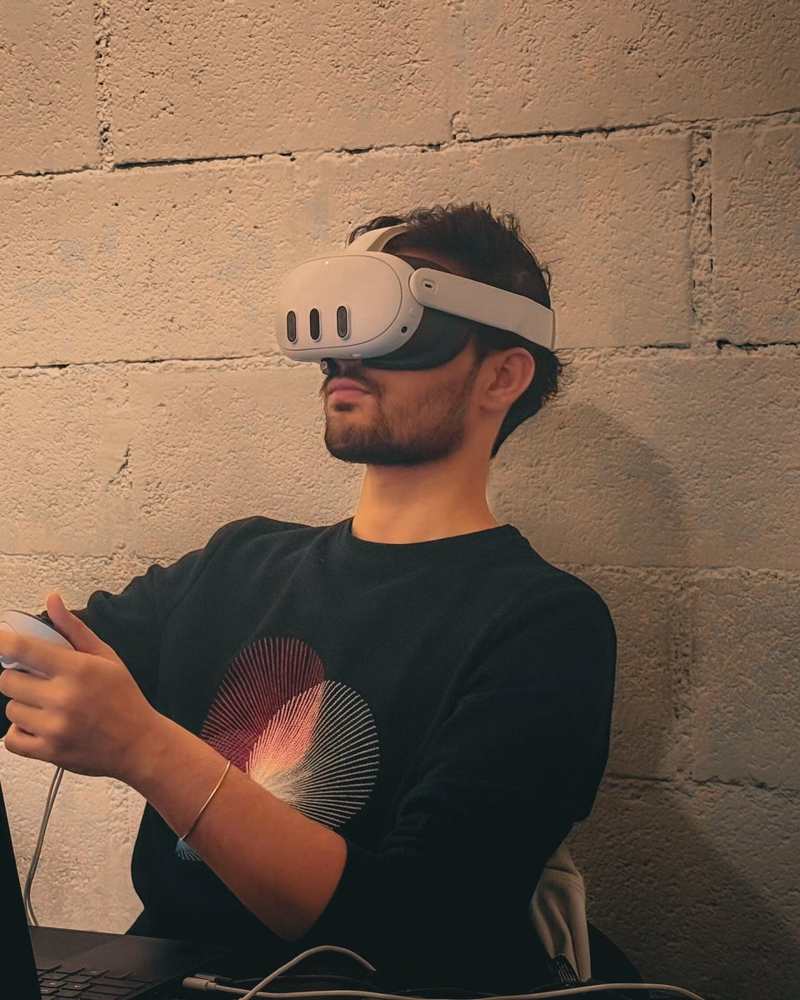

Interactive court
A sports court made of LED floor tiles. It tracks the players and runs games, scores and countdowns right under their feet.
Unity, people tracking, LED floor
Unity and XR developer in Dubai. I build interactive installations, XR apps and games for brands, venues and studios.
This floor works like the ones I build. Walk across it, hold to raise a column, click to splash.Drag across it, hold to raise a column, tap to splash.
Drag or throw the wall. Click a screen to watch it full size.Swipe the wall. Tap a screen to watch it full size.
01 / 10
A sports court made of LED floor tiles. It tracks the players and runs games, scores and countdowns right under their feet.
Unity, people tracking, LED floor
Light pools and ripples around each visitor's feet as they walk across the floor of the pop-up, like stepping through water.
Unity, people tracking, particle simulation
A stylised forest rendered in real time across a curved LED wall, turning an empty room into a place you stand inside.
Unity, LED wall, real-time rendering
Pick a pair of sunglasses on a portrait touchscreen and see them on your own face through the kiosk's camera, then take a photo.
Unity, face tracking, AR
A printed marker board is the controller. Swing it at the camera and the ball rolls down a lane on the video wall.
Unity, OpenCV, fiducial markers
Webcam hand tracking drives a particle system in real time. Hand poses pull it from a flat disc into a falling column or a spiral galaxy.
MediaPipe, Python, Unity VFX
Grab a model of the brain out of the air, turn it in your hands and pull it close to inspect it.
Unity, Meta XR SDK
Draw the road and the car drives it. Physics levels with swinging blades, spikes and gaps to bridge.
Unity, 2D physics
A top-down drift handling model with tyre marks and a live speedometer.
Unity, vehicle physics
Menus, settings, crosshair customisation and achievements for a mobile FPS.
Unity, UI, ScriptableObjects

I'm a Unity developer with nearly six years in games and XR. Most of my work now happens between the screen and the room: LED floors and walls that respond to people, camera and LiDAR tracking, and apps for Meta Quest and Xreal.
I started out making mobile games, which is where the habits came from: tight performance budgets, data-driven systems, and builds that hold up on site, not just on my desk.
Unity, C#, Meta XR SDK, Photon PUN, PlayFab, OpenCV, MediaPipe, YOLO, Hokuyo LiDAR, Leap Motion, Arduino, three.js, p5.js, TouchDesigner, ComfyUI.
Open to installations, XR apps and Unity work.
muhdburh@gmail.com